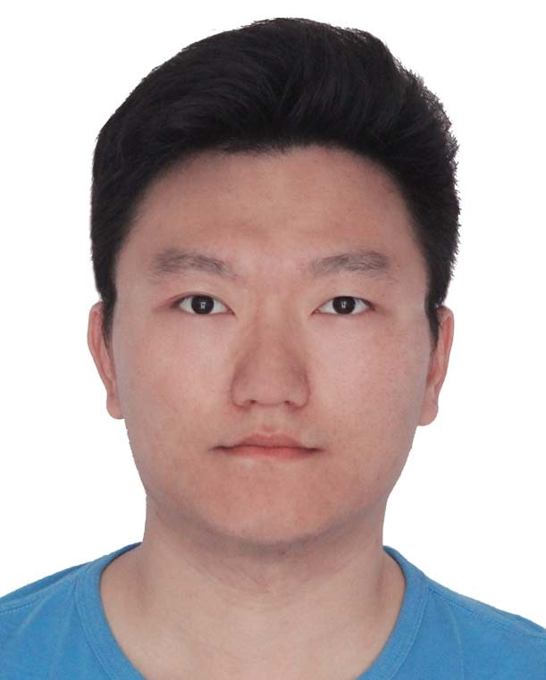

Associate Professor
School of Systems Science and Engineering, Sun Yat-sen University, Guangzhou
Office: Room 620, Building 389, South Campus, SYSU
Emails: yanglx9@mail.sysu.edu.cn
I am an Associate Professor at Sun Yat-sen University. Previously, I worked as a Post-Doctoral Researcher at Sun Yat-sen University in Guangzhou, China. My research interests include Computer Vision, Machine Learning, AI4Neuroscience and Neuroscience4AI. More recently, I am also interested in more higher-level cognitive tasks (e.g., abstract visual reasoning).
News
Apri.11 2025 - We are pleased to announce that our work, "Multilevel Contrastive Multiview Clustering With Dual Self-Supervised Learning",
on multi-view clustering, has been accepted by Transactions on Neural Networks and Learning Systems.
Jan.06 2025 - We are pleased to announce that our work, "Learning with Enriched Inductive Biases for Vision-Language Models",
on adapting visual-language models, has been accepted by International Journal of Computer Vision.
Oct.12 2024 - I am very pleased to become an Associate Professor at the School of Systems Science and Engineering,
Sun Yat-sen University.